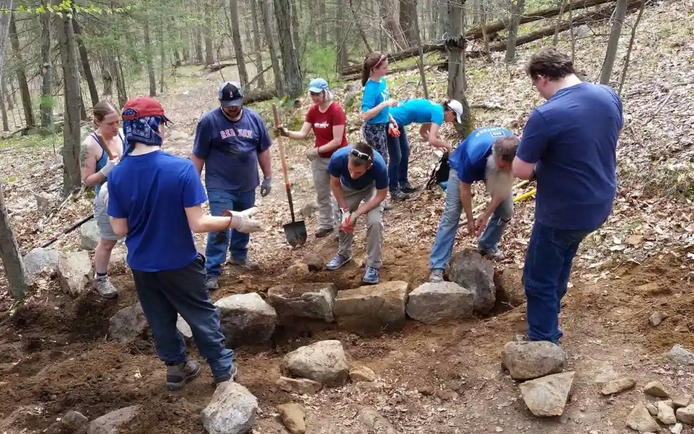
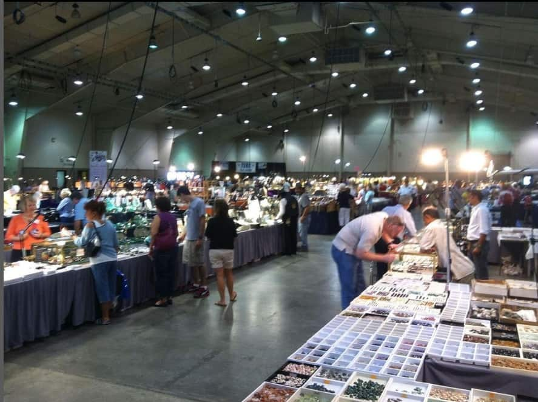
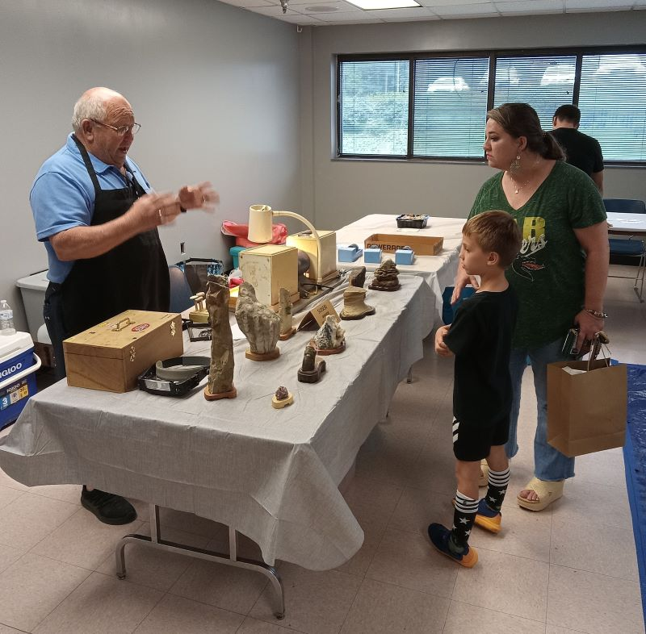

Are you a rockhound seeking to connect with like-minded enthusiasts, expand your knowledge, and discover new collecting sites? Joining a local rockhounding club can be a game-changer, opening up a world of opportunities for learning, adventure, and camaraderie.
Rockhounding clubs are vibrant communities where members share their passion for Earth's treasures. They organize field trips to exclusive locations, offer workshops on identification and lapidary arts, host social events, and provide a wealth of resources for rockhounds of all levels. Whether you're a seasoned collector or just starting out, joining a local club can enrich your rockhounding experience in countless ways.
Why Join a Local Rockhounding Group?
- Expanded Knowledge: Learn from experienced members who can share their knowledge of local geology, mineral identification, and collecting techniques.
- Shared Passion: Connect with fellow rockhounds who understand your excitement for finding hidden treasures and who are eager to share their own experiences.
- Field Trips & Excursions: Gain access to exclusive collecting sites on private lands, guided trips to unique locations, and opportunities to collect specimens you might not find on your own.
- Workshops & Classes: Develop new skills in lapidary arts, such as cutting, polishing, and faceting gemstones, or learn about mineral identification and field techniques.
- Social Events & Camaraderie: Build lasting friendships, share stories, and enjoy the company of people who share your passion for rocks and minerals.
Rockhounding Clubs & Groups in the USA
National Rockhounding Organizations
Several national organizations support local rockhounding groups by providing resources, organizing events, and advocating for the hobby:
- American Federation of Mineralogical Societies (AFMS): This is the umbrella organization for many regional and local rockhounding clubs across the US. It provides resources, promotes education, and organizes national events. Their website features a directory of member clubs, making it a great starting point to find a local group.
- Mineralogical Society of America (MSA): While primarily a scientific organization, the MSA offers resources and publications for mineral enthusiasts. Their journal, "American Mineralogist," features cutting-edge research, and they host an annual meeting with presentations and workshops.
- Friends of Mineralogy (FM): This organization is dedicated to promoting interest in minerals and mineralogy. They offer educational programs, scholarships, and grants, and their website features a wealth of information on minerals and collecting.
- American Geosciences Institute (AGI): The AGI is a federation of geoscientific and professional organizations. They provide resources for Earth science education and outreach, including information on rockhounding and collecting.
- United States Geological Survey (USGS): This government agency conducts research and provides information on Earth's natural resources, including minerals and rocks. Their website offers geological maps, publications, and data that can be helpful for rockhounds.
- Rockhound Clubs of America (RCA): The RCA is specifically geared towards rockhound clubs, providing support and resources to promote their growth and success. While individual rockhounds can join, the primary members are rockhound clubs themselves.
Regional Rockhounding Groups
Northeast
Connecticut:
- Connecticut Valley Mineral Club (CVMC): Based in Middletown, CT, this club offers field trips, workshops, and a monthly newsletter.
- Danbury Mineralogical Society (DMS): Located in Danbury, CT, the DMS hosts meetings, workshops, and field trips throughout the year.
- Thames River Rockhounds: Serving southeastern Connecticut, this group organizes field trips, meetings, and educational events.
Maine:
- Maine Mineralogical and Geological Society (MMGS): This statewide organization offers a wealth of resources, including field trips, workshops, and publications, for rockhounds of all levels.
- Oxford County Mineral & Gem Association (OCMGA): This club focuses on mineral collecting and lapidary arts in Western Maine.
Massachusetts:
- Boston Mineral Club (BMC): One of the oldest mineral clubs in the country, the BMC organizes meetings, workshops, and field trips to various collecting sites.
- Massachusetts Mineral & Lapidary Club (MMLC): Based in the greater Boston area, the MMLC offers workshops, educational programs, and social events for rockhounds.
New Hampshire:
- Seacoast Mineral Club: Located in the Seacoast region of New Hampshire, this club organizes field trips, workshops, and social gatherings for rock and mineral enthusiasts.
- N.H. Mineral Club: This statewide club offers field trips, meetings, and workshops for rockhounds of all levels.
- Monadnock Mineral Club: Serving the Monadnock Region, this club organizes monthly meetings, field trips, and educational programs.
New Jersey:
- Franklin-Ogdensburg Mineralogical Society (FOMS): Based in the heart of the Franklin Mineral District, FOMS offers field trips, educational programs, and access to collecting sites rich in fluorescent minerals.
- North Jersey Mineralogical Society: This group hosts monthly meetings, field trips, and a gem and mineral show.
- New Jersey Mineralogical Society (NJMS): They organize field trips and workshops throughout the state, with a focus on mineral collecting and education.
New York:
- New York Mineralogical Club (NYMC): This club, based in New York City, hosts monthly meetings, field trips, and workshops for collectors of all levels.
- Rochester Academy of Science Mineral Section (RAS-MS): Located in Rochester, NY, the RAS-MS offers field trips, educational programs, and a mineral museum.
Pennsylvania:
- Mineralogical Society of Pennsylvania (MSP): This statewide organization offers a variety of resources, including field trips, workshops, publications, and a junior rockhound program.
- Mineralogical Society of Northeastern Pennsylvania (MSNEPA): Based in Pittston, PA, this club organizes monthly meetings, field trips, and an annual gem and mineral show.
- Delaware Valley Mineral Club: Serving the Philadelphia area, this club offers monthly meetings, field trips, and workshops.
- Pennsylvania Mineralogical Society: This statewide organization hosts an annual show, field trips, and educational events.
Rhode Island:
- Rhode Island Mineral Hunters (RIMH): This club organizes field trips to various collecting sites throughout the year, focusing on minerals, fossils, and other geological finds.
Vermont:
- Vermont Geological Society (VGS): This organization promotes the study of geology in Vermont and offers field trips, workshops, and publications on the state's unique geological formations.
- Green Mountain Mineral Club: This club serves central Vermont, offering field trips and educational programs on local geology and mineralogy.
Southeast
Here are some rockhounding clubs and organizations in the Southeastern United States:
Alabama:
- Alabama Mineral & Lapidary Society: A statewide organization with various chapters, offering field trips, workshops, and an annual show.
- Birmingham Mineral Society: Based in Birmingham, this club organizes meetings, field trips, and workshops.
Florida:
- Florida Geological Society: A statewide organization with several chapters, focusing on geology and paleontology. They offer field trips, lectures, and publications.
- Tampa Bay Mineral & Science Club: Based in Tampa, this club organizes monthly meetings, field trips, and workshops.
Georgia:
- Georgia Mineral Society: A statewide organization with multiple chapters, offering field trips, workshops, and an annual show.
- Atlanta Mineral Society: Based in Atlanta, this club hosts monthly meetings, field trips, and workshops.
Kentucky:
- Kentucky Paleontological Society: A statewide organization focusing on fossils and paleontology. They offer field trips, meetings, and publications.
- Kentucky Geological Survey: A state agency that provides information on geology and mineral resources, including potential rockhounding sites.
Louisiana:
- Louisiana Geological Survey: A state agency providing information on geology and mineral resources, including potential rockhounding sites.
- Baton Rouge Gem & Mineral Society: Based in Baton Rouge, this club organizes meetings, field trips, and workshops.
Mississippi:
- Mississippi Gem & Mineral Society: A statewide organization with various chapters, offering field trips, workshops, and an annual show.
North Carolina:
- North Carolina Mineral Club: A statewide organization with multiple chapters, offering field trips, workshops, and publications.
- Franklin Gem & Mineral Club: Based in Franklin, this club organizes monthly meetings, field trips, and workshops.
- Charlotte Gem & Mineral Club: Based in Charlotte, this club hosts monthly meetings, field trips, and an annual gem and mineral show.
South Carolina:
- South Carolina Rockhounders: A statewide club focused on rockhounding and lapidary arts, offering field trips, workshops, and an annual show.
- Greenville Gem & Mineral Society: Based in Greenville, this club hosts monthly meetings and organizes field trips.
Tennessee:
- Tennessee Mineralogical Society: A statewide organization with various chapters, offering field trips, workshops, and an annual show.
- Memphis Archaeological and Geological Society: This group focuses on archaeology and geology, offering field trips and educational programs.
- Knoxville Gem & Mineral Society: Based in Knoxville, this club organizes field trips, workshops, and educational events.
Virginia:
- Virginia Mineral Society: A statewide organization with multiple chapters, offering field trips, workshops, and publications.
- Northern Virginia Mineral Club: Based in Northern Virginia, this club organizes meetings, field trips, and workshops.
Additional Resources:
- Southeastern Federation of Mineralogical Societies (SFMS): This organization represents rockhounding clubs across the southeastern US and hosts an annual convention with workshops, exhibits, and field trips.
RELATED TOPIC: Opal Hotspots: The Best Places to Find Opals Worldwide
Midwest
Here are some rockhounding clubs and organizations in the Midwest region of the United States:
Illinois:
- Earth Science Club of Northern Illinois (ESCONI): This active club hosts monthly meetings, field trips, workshops, and an annual show.
- Chicago Rocks & Minerals Society: Based in the Chicago area, this group organizes field trips, workshops, and educational events.
Indiana:
- Indiana Geological Society: This statewide organization offers field trips, workshops, and an annual show.
- Hoosier Hills Gem & Mineral Society: Based in Bedford, this club organizes field trips, workshops, and social events.
- Indianapolis Gem & Mineral Society: This club organizes monthly meetings, field trips, and workshops.
Iowa:
- Iowa City Gem & Mineral Society: This club hosts monthly meetings, field trips, and workshops.
- Des Moines Lapidary Society: Based in Des Moines, this group focuses on lapidary arts and offers workshops and classes.
- Iowa Geological Survey: This state agency provides information on geology and mineral resources, including rockhounding sites.
- Cedar Valley Rocks & Minerals Society: Based in Cedar Rapids, this club organizes field trips, workshops, and an annual show.
Michigan:
- Michigan Mineralogical Society: This statewide organization hosts an annual show, field trips, and educational events.
- Friends of the Mineralogy of Michigan: This group focuses on promoting mineralogy in Michigan through field trips, workshops, and publications.
- Grand Rapids Mineral & Gem Society: This club organizes field trips, workshops, and educational events in the Grand Rapids area.
Minnesota:
- Minnesota Mineral Club: This statewide organization offers field trips, workshops, and an annual show.
- Twin Cities Mineral Club: Based in the Twin Cities area, this club organizes field trips, workshops, and educational events.
Missouri:
- Missouri Federation of Mineralogical & Geological Societies: This organization represents rockhounding clubs across Missouri and hosts an annual show.
- St. Louis Mineral and Gem Society: Based in St. Louis, this club organizes field trips, workshops, and educational events.
- Missouri Mines Rock Swap: This annual event is a great place to meet fellow rockhounds and find unique specimens.
Nebraska:
- Nebraska Mineral Club: This statewide organization offers field trips, workshops, and an annual show.
- Omaha Gem & Mineral Club: Based in Omaha, this club organizes field trips, workshops, and educational events.
North Dakota:
- North Dakota Geological Survey: This state agency provides information on geology and mineral resources, including rockhounding sites.
- Fargo Moorhead Rock & Mineral Club: This club organizes field trips, workshops, and educational events in the Fargo-Moorhead area.
South Dakota:
- South Dakota Rock & Mineral Society: This statewide organization offers field trips, workshops, and an annual show.
- Black Hills Institute of Geological Research: This non-profit organization offers educational programs and field trips to fossil-rich areas in the Black Hills.
Ohio:
- Cincinnati Mineral Society: This club hosts monthly meetings, field trips, and workshops.
- Cleveland Geological Society: This group focuses on the geology of the Cleveland area, offering field trips, lectures, and educational programs.
- Ohio Geological Society: This statewide organization offers field trips, lectures, and workshops on various geological topics.
Kansas:
- Wichita Gem & Mineral Society: This club offers field trips, workshops, and an annual show.
- Kansas City Mineral Club: This group serves the Kansas City metro area, organizing field trips and meetings.
Wisconsin:
- Wisconsin Geological Society: This statewide organization offers field trips, workshops, and an annual show.
- Milwaukee Public Museum Geology Club: This group organizes field trips, lectures, and educational programs on geology and mineralogy.
Additional Resources:
- Midwest Federation of Mineralogical & Geological Societies (MWF): This regional organization represents rockhounding clubs across the Midwest and hosts an annual convention with workshops, exhibits, and field trips.
Southwest

Here are some rockhounding clubs and organizations in the Southwest United States:
Arizona:
- Mineralogical Society of Arizona: This statewide organization offers field trips, workshops, an annual show, and a comprehensive list of local clubs.
- Tucson Gem & Mineral Society: Known for hosting the world-renowned Tucson Gem and Mineral Show, this club also offers educational programs and field trips throughout the year.
- Quartzsite Roadrunners Gem & Mineral Club: This active club in Quartzsite organizes field trips, workshops, and social events.
Colorado:
- Colorado Mineral Society: This statewide organization hosts an annual show, field trips, workshops, and a junior rockhound program.
- Denver Gem & Mineral Guild: This club organizes monthly meetings, field trips, and workshops in the Denver area.
- Four Corners Geological Society: This group serves the Four Corners region, offering field trips, lectures, and educational programs.
- San Diego Mineral & Gem Society: This club organizes field trips, workshops, and an annual show in the San Diego area.
New Mexico:
- New Mexico Mineral & Gem Society: This statewide organization offers field trips, workshops, and an annual show.
- Albuquerque Gem & Mineral Club: This club organizes field trips, workshops, and social events in the Albuquerque area.
- Silver City Gem & Mineral Society: Based in Silver City, this club hosts field trips and meetings, focusing on the unique geology of the area.
Nevada:
- Nevada Mineral & Book Company: This Reno-based business is a hub for rockhounds, offering a wide selection of books, maps, and supplies, as well as information on local collecting sites.
- Las Vegas Gem & Mineral Society: This club organizes field trips, workshops, and an annual show in the Las Vegas area.
Utah:
- Utah Geological Survey: This state agency provides geology and mineral resources information, including rockhounding sites and regulations.
- Salt Lake Gem & Mineral Society: This club offers field trips, workshops, and an annual show in the Salt Lake City area.
- Utah Friends of Mineralogy: This organization offers field trips, workshops, and educational events throughout the state.
Texas:
- Austin Gem & Mineral Society: This club organizes field trips, workshops, and an annual show in the Austin area.
- Dallas Paleontological Society: While focused on fossils, this group also offers field trips and educational programs on local geology.
- Houston Gem & Mineral Society: This club organizes field trips, workshops, and an annual show in the Houston area.
Additional Resources:
- Southwest Federation of Mineralogical Societies (SWFMS): This organization represents rockhounding clubs across the southwestern US and hosts an annual convention with workshops, exhibits, and field trips.
- Rocky Mountain Federation of Mineralogical Societies (RMFMS): This organization represents rockhounding clubs across the Rocky Mountain region and hosts an annual convention with workshops, exhibits, and field trips.
West
Here are some rockhounding clubs and organizations in the Western United States:
California:
- California Federation of Mineralogical Societies (CFMS): This organization represents many rockhounding clubs across California and hosts an annual convention with workshops, exhibits, and field trips.
- San Diego Mineral & Gem Society: This club organizes field trips, workshops, and an annual show.
- Los Angeles Lapidary Society: This group focuses on the lapidary arts, offering classes, workshops, and social events.
Oregon:
- Oregon Rockhounds Online: This website and forum connects rockhounds across the state and provides information on collecting locations, regulations, and events.
- Columbia Willamette Faceters Guild: This group focuses on the art of faceting gemstones, offering classes, workshops, and demonstrations.
- Portland Regional Gem & Mineral Society: This club organizes field trips, workshops, and an annual show in the Portland area.
- Oregon Council of Rock and Mineral Clubs: This organization represents many local clubs throughout Oregon and hosts an annual show.
Washington:
- Washington State Mineral Council: This organization represents many local clubs throughout Washington and hosts an annual show.
- Northwest Federation of Mineralogical Societies (NFMS): This organization represents rockhounding clubs across the Pacific Northwest and hosts an annual convention with workshops, exhibits, and field trips.
- Puget Sound Gem & Mineral Club: This club organizes field trips, workshops, and an annual show in the Seattle area.
Idaho:
- Idaho Gem Club: This statewide organization offers field trips, workshops, and an annual show.
- Coeur d'Alene Gem & Mineral Club: This club serves the Coeur d'Alene area, organizing field trips and educational events.
- Boise Gem & Mineral Society: This club organizes field trips, workshops, and educational events in the Boise area.
- Idaho Falls Gem & Mineral Society: This club organizes field trips, workshops, and an annual show in the Idaho Falls area.
Montana:
- Montana Mineral Society: This statewide organization offers field trips, workshops, and an annual show.
- Yellowstone Gem & Mineral Society: This club is based in Billings and organizes field trips, workshops, and educational events.
- Montana Council of Rock and Mineral Clubs: This organization represents many local clubs throughout Montana and hosts an annual show.
- Billings Gem & Mineral Club: This club organizes field trips, workshops, and an annual show in the Billings area.
Wyoming:
- Wyoming State Geological Survey: This state agency provides information on geology and mineral resources, including rockhounding sites and regulations.
- Rock Springs Gem & Mineral Society: This club organizes field trips, workshops, and an annual show in the Rock Springs area.
- Sweetwater Rockhounders: This club organizes field trips, workshops, and educational events in the Rock Springs area.
Additional Resources:
- Northwest Federation of Mineralogical Societies (NFMS): As mentioned earlier, this organization represents clubs across the Pacific Northwest and is a valuable resource for rockhounds in the region.
You can find more by searching online directories, visiting local rock shops, or connecting with fellow rockhounds on social media.
RELATED TOPIC: Local Rockhounding: The Best Rockhounding Sites Near You
How to Find Other Local Rockhounding Groups Near You
Online Directories:
- American Federation of Mineralogical Societies (AFMS): This organization provides a comprehensive list of clubs and societies across the United States.
- Meetup.com: Search for rockhounding groups in your area or state.
- State-Specific Resources: Many states have geological societies or mineral clubs with local chapters. Check their websites or social media pages for information.
Local Rock Shops & Gem Shows:
These are great places to meet fellow rockhounds and inquire about local clubs. Shop owners and vendors are often knowledgeable about the rockhounding community in their area.
Social Media:
Join rockhounding groups on Facebook or other platforms to connect with enthusiasts in your area and learn about upcoming events or meetings.
Activities and Events of Rockhounding Clubs

Local rockhounding groups organize a variety of activities:
- Field Trips: Excursions to collect specimens and explore new sites.
- Workshops: Educational sessions on rock and mineral identification, lapidary skills, and more.
- Annual Shows: Rockhounding events where members and the public can buy, sell, and trade specimens.
- Social Gatherings: Picnics, holiday parties, and other social events to build community.
How to Join a Local Group
Finding a Group:
Use online directories, local libraries, and rock shops to find nearby groups.
Membership Process:
Most groups require a simple membership application and an annual fee.
Benefits:
Access to exclusive field trips, educational resources, newsletters, and a network of fellow rockhounds.
Online Rockhounding Communities
In addition to local groups, online communities provide a wealth of resources and virtual interactions:
Rockhound Forums:
Websites like Mindat.org and Rock Tumbling Hobby offer forums for discussions and advice.
Social Media Groups:
Facebook groups and Reddit communities where rockhounds share finds and tips.
Virtual Events:
Webinars, virtual field trips, and online shows.
Take the Next Step!
Don't miss out on the fun and camaraderie of joining a local rockhounding group. Explore the resources listed above and connect with other enthusiasts in your area. Whether you're seeking knowledge, adventure, or simply the joy of shared passion, a local rockhounding club can enrich your experience and deepen your appreciation for Earth's treasures.